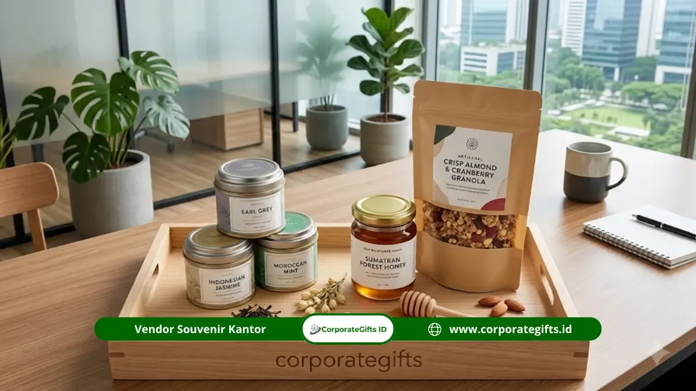

Corporate Gifts ID - Hamper kuliner premium untuk direksi saat anniversary perusahaan adalah bingkisan makanan dan minuman gourmet kelas atas yang dikemas dalam kemasan eksklusif sebagai simbol apresiasi formal dan penghormatan kepada jajaran pimpinan. Isi hamper umumnya berupa biji kopi single origin, seduhan teh artisan dalam kaleng tin mewah, cokelat couverture buatan tangan, madu hutan liar murni, hingga camilan sehat rendah gula. Kategori hadiah kuliner ini semakin diminati korporat modern karena memberikan sentuhan hangat yang personal tanpa terkesan berlebihan dibanding cinderamata barang fisik biasa.
Poin Kunci Hamper Kuliner Direksi:
- Sentuhan Personal & Elegan: Menggabungkan etika formal korporat dengan kehangatan rasa yang dapat dinikmati langsung oleh direksi dan keluarga.
- Kualitas Bahan Gourmet: Memprioritaskan bahan organik, sertifikasi higienis, dan cita rasa autentik di atas produk konsumsi massal umum.
- Fleksibilitas Preferensi Diet: Mudah disesuaikan dengan pola hidup sehat, seperti bebas gula rafinasi, bebas gluten, maupun produk tanpa kafein.
- Kemasan Presentasi Mewah: Dikemas menggunakan kotak kayu pinus berperekat magnetik, hardbox laminasi beludru, atau keranjang anyam kulit premium.
Apa Itu Hamper Kuliner Premium untuk Direksi?
Secara konsep, hamper kuliner premium untuk direksi adalah parsel berstandar kurasi tinggi yang dirancang khusus untuk memenuhi standar selera pimpinan level dewan direksi, komisaris, maupun mitra bisnis strategis.
Berbeda dari parsel hari raya konvensional yang kerap dipenuhi produk kalengan supermarket, hamper kuliner eksekutif menekankan unsur eksklusivitas, kelangkaan bahan, serta estetika visual unboxing yang memukau. Kategori ini mencakup produk-produk artisan yang diproduksi secara terbatas, memiliki cerita asal-usul (provenance) yang jelas, dan memiliki daya tahan simpan yang aman selama proses pengiriman.
Mengapa Hamper Kuliner Masih Relevan untuk Hadiah Direksi?
Bagi jajaran direksi yang kerap menerima beragam merchandise korporat, hadiah berupa barang fisik terkadang menumpuk dan kehilangan daya tariknya. Hamper kuliner hadir sebagai alternatif cerdas yang memberikan pengalaman sensorik istimewa.
Menurut survei industri corporate gifting internasional oleh GiftAFeeling pada tahun 2025, sekitar 70% eksekutif bisnis menyatakan bahwa hadiah kuliner premium memberikan impresi hubungan personal yang lebih tulus dibanding plakat atau cinderamata pajangan.
Selain dinikmati secara pribadi, makanan dan minuman berkualitas tinggi juga sangat praktis disajikan oleh direktur saat menyambut tamu penting di ruang kerja mereka, atau dibagikan kembali kepada tim internal sebagai bentuk perayaan bersama.
10 Rekomendasi Hamper Kuliner Premium untuk Direksi
Berikut adalah 10 ide kurasi produk kuliner berkelas yang sangat direkomendasikan untuk momen anniversary perusahaan:
- Hamper Kopi Single Origin Kemasan Kotak Kayu: Biji kopi pilihan dari perkebunan dataran tinggi Nusantara (seperti Gayo, Toraja, atau Kintamani) yang dipanggang oleh artisan roaster ternama. Dikemas dalam box kayu berukir logo grafir laser untuk penikmat kopi sejati.
- Hamper Teh Premium Kemasan Tin Eksklusif: Daun teh pucuk pilihan (white tea, oolong, atau chamomile) dalam kaleng tin custom kedap udara. Praktis disimpan lama dan memberikan aroma relaksasi mewah di meja kerja.
- Hamper Cokelat Couverture Artisan: Cokelat murni dengan kandungan cocoa butter asli dan beragam paduan rasa lokal, seperti rempah, kacang mete, atau sea salt. Kemasannya dilapisi pita satin dan hot stamping emas.
- Hamper Madu Hutan Murni dan Granola Sehat: Madu hutan liar tanpa pemanis buatan yang dipadukan dengan granola kaya biji-bijian panggang, opsi sempurna untuk direksi yang aktif menjaga kebugaran tubuh.
- Hamper Kue Kering Premium Gaya Homemade: Nastar wisman keju edam, kastengel klasik, dan almond cookies berbahan mentega Eropa tanpa bahan pengawet sintesis, dikemas toples kaca vacuum.

Presentasi kemasan kayu dan toples kaca kedap udara menjamin kesegaran bahan serta mempertegas prestise perayaan anniversary.
- Hamper Selai Buah Alami dan Roti Artisan: Selai buah organik tanpa pemanis buatan yang disandingkan dengan sourdough atau pastry kering, menghadirkan nuansa sarapan eksekutif Eropa.
- Hamper Rempah dan Bumbu Dapur Eksklusif: Garam laut kristal (flaky sea salt), minyak zaitun extra virgin infused, dan rempah pilihan dalam botol kaca estetik bagi direksi yang hobi memasak di akhir pekan.
- Hamper Camilan Sehat Rendah Gula: Kacang macadamia, pistachio panggang, dan dried fruits organik yang aman bagi pimpinan yang membatasi konsumsi gula harian.
- Hamper Minuman Herbal & Jamu Modern: Seduhan rempah alami berbasis jahe merah, kunyit, dan serai dalam sachet pyramid bag modern tanpa ampas.
- Hamper Dessert Box Premium Tahan Lama: Brownies fudge premium atau kue lapis legit premium bermentega wisman dengan pengemasan vacuum bag higienis.
Matriks Komparasi 10 Pilihan Kuliner Direksi
Tabel komparasi berikut mempermudah panitia pelaksana anniversary dalam memilih kategori kuliner yang paling tepat:
| Kategori Produk | Kemasan Utama | Karakter Rasa & Manfaat | Daya Tahan | Profil Penerima |
|---|---|---|---|---|
| Kopi Single Origin | Kotak Kayu Pinus Grafir | Aromatik, acidity seimbang | 3-6 Bulan | Pecinta kopi eksekutif |
| Teh Artisan | Kaleng Tin Custom Emboss | Menyegarkan, menenangkan | 6-12 Bulan | Pimpinan elegan & formal |
| Cokelat Couverture | Hardbox Rigid Magnetik | Manis-pahit lembut premium | 2-4 Bulan | Direktur muda & dinamis |
| Madu Hutan & Granola | Jar Kaca & Pouch Ziplock | Manis alami, serat tinggi | 6-12 Bulan | Pola hidup sehat & bugar |
| Kue Kering Butter | Toples Kaca Seal Kedap | Gurih renyah mentega asli | 1-2 Bulan | Direksi keluarga & santai |
| Selai Alami & Roti | Kotak Keranjang Anyam | Segar asam-manis buah asli | 2-3 Minggu | Sarapan santai akhir pekan |
| Rempah & Olive Oil | Botol Kaca Cincin Logam | Aroma gurih masak gourmet | 12 Bulan | Eksekutif hobi memasak |
| Snack Kacang Sehat | Canister Alumunium Rapi | Gurih rendah sodium & gula | 3-6 Bulan | Camilan meeting bebas gula |
| Herbal & Jamu Modern | Pouch Pyramid Eksklusif | Hangat berkhasiat herbal | 6-12 Bulan | Pilihan non-kafein rileks |
| Lapis Legit / Brownies | Vacuum Pack & Hardbox | Manis legit rempah mewah | 3-4 Minggu | Penyuka kudapan tradisional |
Tips Memilih dan Mengemas Hamper Kuliner Direksi
Agar hadiah anniversary perusahaan memberikan dampak optimal, panitia pengadaan disarankan menerapkan strategi berikut:
- Perhatikan Tanggal Kedaluwarsa (Expired Date): Pastikan seluruh produk makanan memiliki masa simpan aman minimal 30 hingga 60 hari sejak hari penyerahan hadiah.
- Sertifikasi Pangan Resmi: Seluruh produk kuliner wajib mengantongi izin edar BPOM/P-IRT serta sertifikat Halal resmi demi kenyamanan konsumsi penerima.
- Sematkan Kartu Ucapan Eksklusif: Tambahkan kartu ucapan bertinta emas yang ditandatangani oleh Komisaris Utama atau jajaran pimpinan serikat perusahaan.
- Aplikasi Custom Branding Berselera: Hindari mencetak logo terlalu mencolok di toples makanan. Cukup tempatkan logo perusahaan secara elegan pada pita luar, segel stempel lilin (wax seal), atau tag ucapan kulit sintetis.